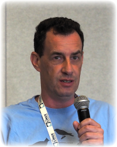

Reconsidering the direct-map fragmentation problem
The kernel's direct map makes all of the system's physical memory accessible in the kernel's virtual address space (on 64-bit systems, at least). As a performance optimization, huge pages are used to construct this mapping; by keeping the kernel's use of the translation lookaside buffer (TLB) down, using huge pages for the direct map will speed memory access in general. When the permissions for specific pages in the direct map must be changed (to hide memory from the kernel or to remove write permission from executable code, for example), though, those huge pages must be split into smaller "base" pages, hurting system performance. This type of direct-map fragmentation is thus worth working hard to avoid.

The talk didn't actually end there, though. Instead, he reviewed the causes of direct-map fragmentation, including the allocation of memory for executable code (such as a loadable module or a BPF program) or for secret-memory features. Proposed future changes, such as a version of vmalloc() with memory permissions or using protection keys supervisor for page tables, may also require splitting huge pages and, as a result, create fragmentation in the direct map.
The __GFP_UNMAPPED patches tried to reduce this problem by setting aside an area for allocations that should be removed from the direct map. Once those were working, he went looking for numbers to justify the change. He ran a whole series of benchmarks to show how the reduced fragmentation made the system run faster, but got results that he described as "peculiar". The results (which he has made available for the curious) showed improvements that were, at best, far smaller than the noise in the measurements. There was little sign that any of the changes would translate into performance improvements for real workloads.
Vlastimil Babka pointed out that all of the performance tests were done on AMD CPUs and wondered whether Intel systems would behave differently; Rapoport answered that he has run the tests on Intel as well with similar results. Michal Hocko asked whether Rapoport had run the tests using only base pages for the direct map — the fully fragmented case, in other words; that test, too, has been run and showed a "single-digit" degradation in performance.
The conclusion from all of this, Rapoport continued, was that direct-map fragmentation just does not matter — for data access, at least. Using huge-page mappings does still appear to make a difference for memory containing the kernel code, so allocator changes should focus on code allocations — improving the layout of allocations for loadable modules, for example, or allowing vmalloc() to allocate huge pages for code. But, for kernel-data allocations, direct-map fragmentation simply appears to not be worth worrying about.
James Bottomley said that these results might show that, on current CPUs, the TLB doesn't work the way developers think it does. Perhaps improved speculative execution is reducing the cost of TLB misses; much of the memory-management subsystem might be built for a world that no longer exists. Rapoport answered that most of the TLB is occupied by user space in any case, so the kernel will almost certainly incur a TLB miss on each entry regardless of the state of the direct map. Trying to prevent that miss with large-page mappings may not be doing any good.
Direct-map fragmentation concerns have led to Rapoport's secret-memory features to be disabled by default. Having concluded that those concerns are not actually concerning, he is now proposing to enable the feature in all kernels, making memfd_secret() available by default. As the session ran out of time, Babka worried that fragmentation could still increase the kernel's memory usage by requiring more page tables, but Rapoport answered that the cost was not enough to worry about. Secret memory is controlled by the system resource limits, so there is only so much damage that a malicious user can do.
The proof is likely to be when the configuration change is proposed; if
users can demonstrate real performance regressions, direct-map
fragmentation may have to be reconsidered yet again.
| Index entries for this article | |
|---|---|
| Kernel | Memory management/Direct map |
| Conference | Storage, Filesystem, Memory-Management and BPF Summit/2023 |
Posted May 12, 2023 2:56 UTC (Fri)
by mtaht (guest, #11087)
[Link]
https://conferences.sigcomm.org/sigcomm/2014/doc/slides/1...
Posted May 12, 2023 10:30 UTC (Fri)
by ardbiesheuvel (subscriber, #89747)
[Link]
Posted May 30, 2023 8:38 UTC (Tue)
by oak (guest, #2786)
[Link]
Many years ago I've also seen up to 10% changes in CPU side memory bandwidth test results from just rebooting the machine, which I think have been due to process memory getting allocated at a different address. Huge pages being split can mean the resulting addresses being less aligned. Maybe that could could improve e.g. cache page coloring (on older platforms)?
Reconsidering the direct-map fragmentation problem
Reconsidering the direct-map fragmentation problem
Reconsidering the direct-map fragmentation problem
https://gitlab.freedesktop.org/drm/intel/-/issues/430#not...